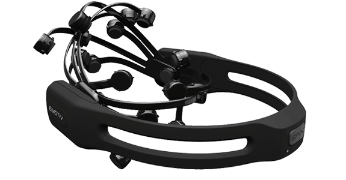
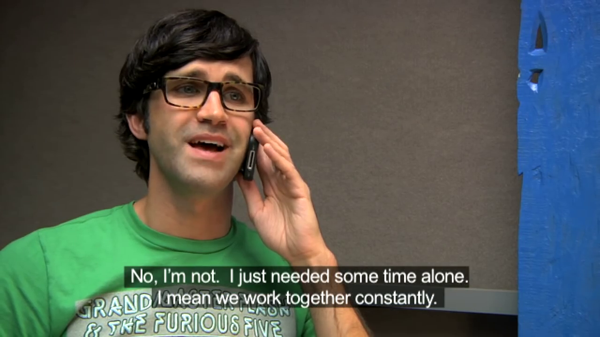

Accessible Technologies
By Mattie Coccia and Alex Schneider
Follow along: http://is.gd/YSBIrP
Talking Points
Physical disabilities, not mental
Consumption of media
Timeline of technology
1700s: Sign Language
1824: Braille
1913: Hearing Aids
1950s: TTS/Screen Readers
1972: Closed Captioning
Legal History
Pre-WWI: Second class citizens
1930-1950: Disabled war veterans lobby for increased rights and support
1973: Rehabilitation act
1990: Americans with Disibilities Act
2010: Communications and Video Accessibility Act
http://archive.adl.org/education/curriculum_connections/fall_2005/fall_2005_lesson5_history.html
Development and sale of traditional accessible technologies
Hearing aids $1500+
Powered wheelchairs $1500+
Navigation systems for the blind $600
Assistive Technologies That Are Still Expensive
Sip/puff switches $300+
Refreshable braille display $3500+
Brain computer interface $400+
A11y (Accessibility) Software
Screen readers
Speech recognition for control
Automatic captioning systems
Writing Accessible Software is Hard
Chapter 1 content goes here
Chapter 2 content goes here
Quiz content goes here
16 lines of code
Chapter 1 content goes here
Chapter 2 content goes here
Quiz content goes here
37 lines of code - more than double
Automatic Captions
Accessibility in Gaming
Colorblind mode
Visual based games adapted for blind gamers
Unconventional control methods
Colorblind mode menu

Colorblind mode

Visual based games adapted for blind gamers
Unconventional control methods
GimpyG Gaming video
Disabled people often have to jump through hoops in order to get the same experiences.
Who should be responsible?
Content creators?
Accessible technology developers?
Development time for games and accessible software is expensive!
Possible Solutions
Incentives for spending dev time making products accessible
Provide standard built into the operating system for pluggable accessibility tools (colorblindness, subtitles, alternate control devices)
Subsidize the hardware that is neededed